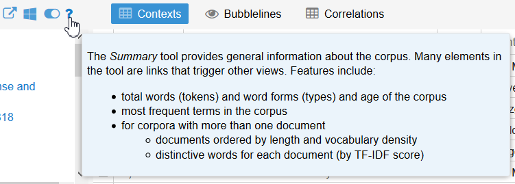
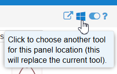

Text Analysis with Voyant Tools
What you will learn
This introductory session focuses on:
- importing a corpus in Voyant Tools
- a selection of useful text analysis tools and visualisations
- some text analysis concepts relevant to the academic setting
- how to share your insights
You can use your own files to analyse, or rely on the example corpus provided.
Voyant Tools
Voyant Tools is an Open Source text analysis application that runs in your web browser, originally developed by Stéfan Sinclair (1972-2020) and Geoffrey Rockwell. It can be used to gain insights on a text or collection of texts, by using a combination of tools that look at the data from different angles, using distant reading techniques. It ultimately allows creating a personalised dashboard that highlights the most important aspects of your text analysis, and makes it easy to share those insights with others.
Given that it only needs a web browser to run, you can run it on any desktop operating system, offline. However, you also have the option to run it online, on a hosted version like the official website.
Installation
You don’t need to install anything to use Voyant Tools, as it can be used online on the official website. And if this main server is overloaded or not available, there is a list of mirrors you could use instead.
However, if you want to use it offline, on your own computer, you can:
- Download the latest Zip archive
- Extract the archive
- Open the VoyantServer.jar file
Using Voyant Tools locally could be useful if you deal with sensitive data, for example, but know that you won’t be able to embed live visualisations on a website for everyone to interact with.
The default dashboard
To load a text files or a corpus (i.e. a collection of texts):
- Go to Voyant Tools
- Click the “Open” button
- Choose one of the two example corpora: Jane Austen’s novels or Shakespeare’s plays
- Click “OK”
This will open the default Voyant Tools dashboard, which includes the following tools:
- Summary: some quick statistics about the corpus
- Reader: to navigate the text
- Cirrus: a word cloud
- Trends: see changes in term use across texts
- Context: see terms in context
Let’s first go through these default tools.
Default tools
At any time, you can hover over the question mark to see a short description of the tool or click on it to find out more.

You can also find extra options by clicking on the options button right next to the question mark. For example, you can change the stopword list used for all or some for the tools.
Stopwords are words that are removed before analysing the text. In English, it is common to include words like “the”, “or”, “and”… in the stopword list.
Summary
The Summary tool gives an overview of the corpus, including:
- number of documents, words and unique words
- document lengths
- vocabulary density: how diverse is the vocabulary of each document
- average words per sentence
- most frequent words in the corpus (i.e. overall term frequency)
- distinctive words: this shows which words make a document differ to others, by a term frequency analysis called TF-IDF.
Reader
The Reader tool is not only about reading through the text. You can:
- see the relative size of each document in the bar graph (the area is proportional to the size)
- hover over a word to see the term frequency in the document
- click on a word to see a distribution graph for the whole corpus
- search for particular terms (click the question mark for a more advanced search syntax, e.g.
marri*to include terms like “marriage” and “married”)
Notice how clicking on a term changes the view in the Trends and Context tools?
Cirrus
The Cirrus tool is a word cloud visualisation of the most common terms for the whole corpus.
You cant change to a single document by using the “Scale” menu, and change the number of terms shown with the slider.
By using the options button, you can change the look of the word cloud, including font and colours.
Trends
The Trends tool shows how relative term frequencies change between documents. If the documents are ordered chronologically, it can give an idea of a timeline of change in vocabulary.
By default, it uses the 5 most common words, but you can change which words are represented by writing them in the search bar and separating them with commas. For example, use this search: prejudic*, trust*, *respect*, pride|proud
In this syntax,
*stands for “any number of characters”, and|stands for “or”.
You can turn words on and off by clicking on the legend, and change the look of the chart by using the “Display” menu. Hovering over parts of the chart will reveal more information, and clicking will update the view in the Reader and Contexts tools.
If you double-click on a part of a plot, you can also “drill down” to see the term frequencies inside the documents, by segmenting them (the number of segments can be changed in the tool’s options).
Context
The Context tool shows occurences of a term in context, which can be useful to explore how a particular word is used in a document.
The “context” and “expand” sliders define how many words are shown around the term, in the single row view and the expanded view respectively. (Click on the + symbol to expand the context.)
Extra tools
Voyant tools offers more than 20 tools to explore corpora. This tutorial is not designed to have a thorough overview of every single one of the tools, but here are a few extra tools that might come in handy, and that give an idea of the breadth of features Voyant Tools offers.
To use extra tools, either click the names above each one of the default tools, or use the tool menu in the toolbar (pictured).

Links
The Links tool can be found above the Cirrus, or in the “Tools - Visualization Tools” menu.
It represents a network of frequent words and some of their collocates (i.e. terms that appear in proximity, by default 5 words either side). We can change the keywords (shown in blue) with the search box, and their collocates appear in orange.
Hovering over keywords shows the frequency in the corpus, whereas hovering over collocates shows their frequency in proximity.
You can double-click on a term to show more collocates, and right-click on it for more options.
Phrases
The Phrases tool can be found above the Summary, or in the “Tools - Corpus Tools” menu.
It allows you to define maximum and minimum lengths of phrases to reveal the most common ones in the corpus. Try for example to search for the most common 6-term phrases in the corpus.
Import new data
Instead of using one of the default corpora, you can import your own documents. TXT, HTML, XML, JSON, XLSX, ODS, CSV are some of the supported formats.
The options you have for each format are described in the “Creating a Corpus” documentation page.
You can upload several files at once, by either doing a multiple selection or archiving them in one single ZIP file.
Challenge: import a book from Project Gutenberg
- Go to the Project Gutenberg website to find Public Domain works
- Download a book in TXT format
- Does this file need a bit of cleaning up before analysing?
- “Upload” it in Voyant Tools
- Explore!
Resources
- Official Voyant Tools documentation, including guides and tool descriptions
- Hermeneutica: Computer-Assisted Interpretation in the Humanities (Rockwell and Sinclair, 2016), a book using Voyant Tools extensively
- Many tutorials on analysing language and text with R on LADAL
- Discover hundreds of other text analysis tools with TAPoR